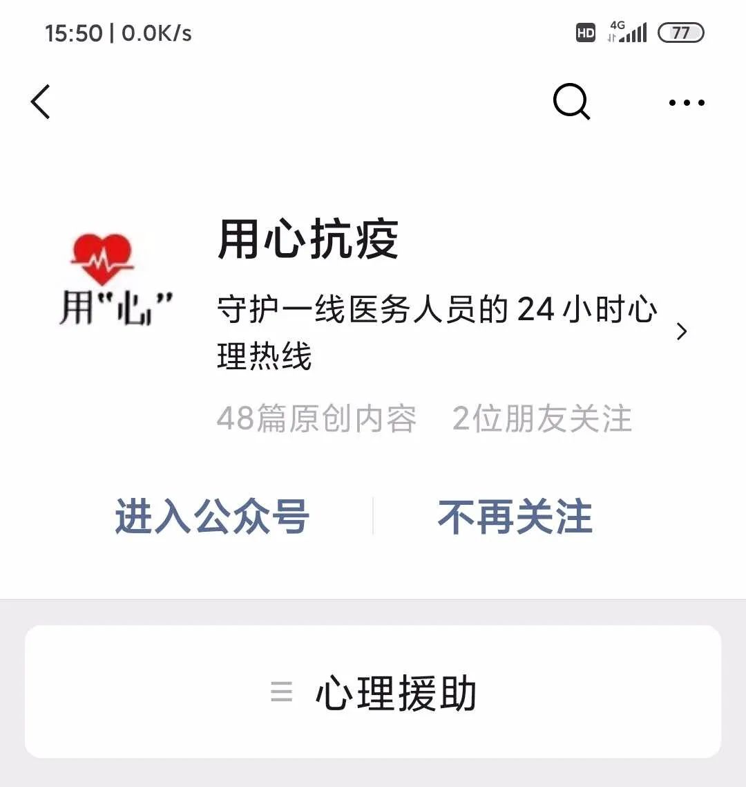

「在疫区，中年人没有地方可以哭」｜武汉心理咨询师的510通电话
原文链接 备份链接 北大精神卫生研究所曾在2004年做过一项调查，发现SARS痊愈出院的病人3个月内抑郁状态和焦虑状态的检出率分别是16.4%和10.1%。严重传染性疾病与一系列精神疾病存在联系，根据国内外的研究，重大灾难后精神障碍的发生 …

平时那一撮歧视亚洲人的人，还掩饰着没暴露，现在狐狸尾巴露出来了。
记 者 | 陈 冰
受访者 | 高彦隽
我是谁？我在做什么？
作为一名美国注册心理咨询师，远在大洋彼岸的美国新泽西州发展的我，看到武汉一线医护人员与疫情顽强抗争的种种事迹，对医护人员的敬意无法用言语表达。一线的艰苦，只有一线知道。

当然，他们中一定有感到害怕、委屈、焦虑、绝望、疲惫……出现睡不着、吃不下饭、脾气不好的行为，哪怕是崩溃失控，都是在这个非常时期对抗突如其来、过于集中甚至极限挑战的高压力源的正常的应激反应。

作为旁观者，我们能做的，就是聆听他们的经历、付出、为难……理解他们的委屈、愤怒、恐惧……接纳他们的疲惫、脆弱、无力……在这个基础上，与他们站在一起。
我们是一支由世界各地的志愿者组成的专业心理咨询公益团队，为武汉的医护、病患乃至普通人提供24小时不间断心理热线服务，迄今为止，已经运作了接近2个月时间，接下来将会向中国在欧美的留学生、华侨、华人等群体提供相关帮助。
我们在疫情期间，用“心”抗“疫”。

缘起
1月23日，武汉封城。北京教育学院的曹慧博士马上想到发起一个心理援助热线，帮助身处高压环境中的武汉医护人员，这个想法迅速得到武汉华中科技大学附属同济医院徐波医生的点赞。

于是专家们迅速行动起来，1月27日就建立起了微信群，包括中国第一批临床心理学注册督导师王建平、国际应用心理学会咨询心理学专业委员会理事侯志瑾、国际华人心理与援助专业协会主席张怀宇在内的资深心理督导师成立了一个20人的督导团队，负责视频面试来自世界各地的专业心理咨询师或精神科医生志愿者，以及开展相关的培训工作。
我第一时间加入了这个群，申请成为志愿者。在还没有开通热线之前，我们先建立起了运营支持团队，包括统筹、技术、宣传、法务、外联、咨询师和督导师服务组等。我加入的是翻译小组，我们这个危机干预资料翻译小群有二十几个人，国内国外的都有，大家每天根据自己的时间安排认领一部分需要翻译的相关医学资料，一个翻译加一个校对，一晚上可以翻译两三个章节。这些资料既包括我们这些志愿者需要遵从的法律伦理准则，也包括一些专业的心理危机干预资料。比如说，根据疫期特性和热线及危机干预特点，我们翻译了不少编适合的工作人员手册和自助手册。
作为一名志愿者，我填写了报名表，包括基本信息、学历、职业训练经历、工作单位、伦理学习等信息及证明材料。还做了测试题。
对我们这些志愿者的资历筛查包括：美国执业执照、国内注册系统认证等职业资格；咨询时长200小时以上，督导时长50小时以上，危机干预时长50小时以上；参加过且提供关于伦理培训的学习经历证明……
后来我接到了督导组专家的视频面试通知。专家们一上来就扮演患者，看我如何进行危机处理。很快，面试的三个专家通过了我的考核，据说督导组独立审查后合议，二位督导或顾问专家一致认可的咨询师才能入选，最终入选比例为10:1。
我们这些入选的志愿者都拥有专业心理咨询师或精神科医生执业资质，拥有丰富的专业创伤治疗、危机干预、心理急救培训和心理援助热线实践经验，还有一部分人曾经参与过汶川地震等重大灾后心理重建任务。
但我们还是纷纷进入到了岗前培训的环节。这些督导们给我们上了不同类型的督导课，为我们下一步援助热线储备知识与能力构建。毕竟热线救助和心理咨询是两回事。
心理咨询是一个很缓慢的过程，它的最终目的是要把咨询者心中最痛的点打开。而热线救助则相当于外科的紧急处理措施，需要赶紧包扎止血，不至于让咨询者的情绪失控，做出自杀等不理智的举动。所以，我们不能马上把人家最痛的点打开，而是要在半个小时左右的热线电话时间内采用尽可能的舒缓方法，让咨询者的情绪平缓下来。
因为群里差不多有一半的志愿者身在北美，所以我们和国内的志愿者正好在时间上互补，达成了热线24小时开通的目标。大家根据自己的时间排好班次，用手机接听来自大洋彼岸的倾诉电话。
也就是在武汉封城后的几天时间之内，我们就快速建立起了一支以守护医护人员心理健康为己任的24小时不间断热线。我们的志愿者团队中有来自湖北省武汉市一线医院的医务人员、来自全国的具有心理学背景的社工、管理人员以及多个领域的专业人士，从全方位的角度关注疫情的实时信息，并不断根据一线医务人员的情况和需求改进我们的工作。
心理“树洞”
我们都做了些什么？
首先，当然是24小时不间断的专业心理咨询师守候，为医护人员开通心理防线的守护。
其次，我们在“用心抗疫”这个公众号发布一系列的心理援助文章，进行在线科普宣教。同时，还专门针对医护人员及相关机构的心理健康问题形成了一本《关爱疫情一线医护人员心理手册》。

不仅仅是医护人员，任何有需要的人，都可以在公众号中留言，从而获得心理咨询师的陪伴和帮助。我们还专门开发了一个“用心心理”的微信小程序，有需要的人可以用文字求助。
我们还会通过视频会议系统对医护人员及相关机构开展心理援助、哀伤辅导等，并实时回答医护人员提问。
通过培训和咨询，我发现医护绝对是高危人群。通常，我们将拥有心理创伤病史、心理疾病史、家族史、孤立无援，而且处于高强度工作之中、带伤工作、带伤比赛的人群视为高危人群，对照以上几点，可以看出处于一线的医护人员工作压力和心理压力都是非常巨大的。
在抗“疫”初期，他们不得不面对连轴转，甚至更长时间的工作排班。在医疗物资不足的情况下，不得不冒着被感染的风险“裸奔”。而他们可能无法关心和帮助自己的家人。可以说在个人、家庭和职业上都遇到了非常大的挑战。
现在，他们则面临着职业耗竭感。他们的同事可能被感染，病人可能无法成功救治，而家人可能已经离去……这些悲伤的事实都会成为他们心理的负担，淤积在心中久久不能散去。我们能做的，就是帮助他们快速找回自己应对不良情绪的方法，让情绪慢慢平复下来。
曾经有位武汉金银潭的科室主任说，科室4个医生24小时连轴转，抢救、查房、陪病人送检，除此之外，病人的吃喝、大小便，也都得帮助护士做，因为怕病人在厕所晕倒。
有的医生刚刚脱下工作服便再也忍不住，瞬间变身小女生，坐在房间里嚎啕大哭；也有不知如何宣泄情绪的医生，表面上看一切正常，却因为长时间不能休息、无法轮换，出现应激性障碍，严重失眠导致无法正常上班……
真的，听到他们的哭声，远在美国的我，都能感到深深的撕裂感。不过，我算是很幸运的，能够在这个时候，以自己的专业身份帮助他们，让自己觉得心安一点。某种程度上讲，这也是对我的一次很好的治疗。因为督导老师们会根据我们的案例，再建群进行分享。比方说如何在帮助求助者的同时不过多地自我卷入，及时地进行自我觉察，并在自我觉察后进行自我调整、自我关怀，稳定地陪伴、支持自己。
反转
没有想到，两个月以后，同样的危机再一次复制。
我们在泽西市，距离曼哈顿也就十分钟车程。现在的情况是政府关闭所有学前班、幼儿园至十二年级学校、高等教育机构。关闭所有赌场、赛马场、剧院、体育馆。晚上8点以后关闭所有非必要的零售、休憩和娱乐业务。禁止超过50人的聚集活动。同时敦请大家尽量呆在家里，如果外出，请大家保持距离。
早上超市营业的第一个小时，买菜时间留给老人、残疾人和孕妇，保证他们买到东西是其一，提供单纯的环境，减少概率感染更为重要。我们基本不出门了，但是在外面散步的人也不是没有，这两天天气好，还是有人出门看看的。
我最近不接热线电话了，现在孩子不上学，没有时间了。
高彦隽接听热线电话的工作不得不暂停，因为年幼的孩子不上学了，需要人照顾
现在我们这边的各家医院口罩、防护服也不够，现在在各种群拉捐赠。
美国股市熔断了那么多次，经济压力越来越大了。有些人如钟点工阿姨，工资变少、一定压力很大。坐办公室的也会担心，经济不好，会不会裁员。单身在家的，会很孤独。
我觉得现在的美国和当时的武汉初期很像。这个疫情来势凶猛，对各国领导力都是一种挑战。物资终究应该是政府调度、补充准备的责任，而不是靠民间捐助。美国吃瓜两个月，看我们这期间物资还如此匮乏，没有准备充分，领导力让人失望！
3月19日，美国总统特朗普在白宫新闻发布会上的讲稿被记者拍下。照片显示，稿件中的“新冠病毒”被划掉，手写改为了“中国病毒”
现在美国还有歧视亚洲人的部分现象，这是一直存在的，现在更加明目张胆了。平时那一撮歧视亚洲人的人，还掩饰着没暴露，现在狐狸尾巴露出来了。虽然大多数是友善的，但这种歧视，遇到一百个人，或许就一个人发神经病，也非常糟心，让人不爽。而特朗普多次公然将新冠病毒称为“中国病毒”，这更让人气愤！
我看美国的心理咨询措施必须要赶紧跟上了。
部分资料来源｜“用心抗疫”公众号


· 我在海外 | 在伊朗的中国人：坐上回国包机前，都经历了什么？
新民周刊所有平台稿件， 未经正式授权
一律不得转载、出版、改编或进行
与新民周刊版权相关的其他行为，违者必究


原文链接 备份链接 北大精神卫生研究所曾在2004年做过一项调查，发现SARS痊愈出院的病人3个月内抑郁状态和焦虑状态的检出率分别是16.4%和10.1%。严重传染性疾病与一系列精神疾病存在联系，根据国内外的研究，重大灾难后精神障碍的发生 …
原文链接 备份链接 燃财经（ID:rancaijing）原创 作者 | 孔明明 编辑 | 周昶帆 在抗击新型冠状病毒感染的肺炎中，看不见的敌人除了无形的病毒，还有人们心里的创伤和危机。 昼夜连续工作、因确诊而感到恐慌、被隔离无法出门、因为 …
原文链接 备份链接 口述 ：Johnny 采访、文 ：杨溪 “ 我们的目的和初衷是希望在安全的情况下，尽可能保留医护人员漂亮的一面。很多医护人员中途就又打电话联系我，说上次头发剪完了想再修一修，我就回去再帮他们重新设计，修剪一下。他们说已 …
原文链接 备份链接 非常时期 他们的存在是照亮黑暗的光在武汉坚守工作岗位的普通人 户外探险队志愿者大象，打开后备箱，打开一个水果罐头，将糖水一饮而尽。 1月23日武汉封城，1月26日，武汉实行中心城区机动车禁行管理，出租车停运，医护人员的 …
原文链接 备份链接 - 疫 情 之 下 - 如今，针对医护人员的出行难，政府已出台各种措施，但还是有个别的需求难以得到满足。高宇说，他会一直坚持到医护人员交通困难问题缓解的那一天。 ” 2020年1月23日，武汉市新型冠状病毒感染的肺炎疫 …